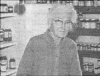
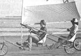

In celebration of little-known MOTHER-type folks all over.
Those who are not familiar with the town of Harrison, Arkansas might easily miss the tiny sign - pointing to a shop in a largely deserted old building - which reads: "Gaither Mtn. Health Foods" . . . but to area residents the business is a godsend. The interior of the establishment is dominated by a small, cheerful, gray-haired woman, who presides over well-stocked shelves and coolers. Her name is Minnie Mae Davis.
Ms. Davis started the non-profit enterprise - which specializes in natural foods and sources of non-animal protein - on a part-time, volunteer basis back in 1961. And 11 years later, when she retired from her full -time employment at the age of 74, Minnie began devoting nine hours a day, five days a week to the health food venture. (Ms. Davis - who lives on Social Security - still refuses to accept a personal income for her work . . . charging just enough over cost to cover expenses.)
Now 82, Minnie attributes her good health and vitality to "natural foods, pure thoughts, and 50 years on a meatless diet". And her unselfish dedication to providing healthful sustenance for others has made her a friend to every customer. - Douglas Sean Alexander.
Back in 1971 Roman Kettler developed an innovative approach to helping low-income farmers gain access to capital that they could use to begin diversifying their farming operations. As agricultural supervisor for the Northeast South Dakota Community Action Program, Kettler came up with a plan that would generate funds to establish and maintain a co-op lending institution.
The program, known as the Northeast Livestock Cooperative, started with pig loans to local swine raisers . . . who - at the end of the season - pay back each sow originally lent by the agency as capital, along with one of her season's crop of feeder pigs (as interest). The feeder pigs are then sold, and the resulting revenue is used to support the financial cooperative . . . which helps guarantee loans from area banks to farmers whose credit might not otherwise be approved.
Now in its tenth year, the Northeast Livestock Co-op's annual operating capital fund averages $450,000. "And through the years," says Kettler, "our services have made it possible for more than 250 low-equity farmers to raise over $2.5 million in loans." - JV.
Keith Daniels is at war with our throwaway society and its attempts to bury the hard-earned knowledge of thrifty mechanics and craftspeople of days gone by.
Consequently, Keith has been devoting his time - since 1977 - to collecting, indexing, and publishing such practical information . . . and, to date, Daniels' efforts have resulted in two large spiral-bound volumes (titled Recycling & Repairing and Hand Made Hand Tools ) which are crammed full of invaluable how-to tips gleaned from mechanics' and farm journals published between 1890 and 1948. (The books are available for $7.95 each - plus $1.00 shipping and handling per copy - from Keith's own Lost Data Press, Dept. TMEN, P.O. Box 4889, Austin, Texas 78765. )
As Daniels states in the introduction to Recycling & Repairing, his books are "full of basics and essentials, little and big, that no one thinks to tell you. Any person, working in any field," he adds, "has picked up, invented, or discovered tricks of the trade. Here are some of them . . . and I'm always looking for more." - Bob Rafferty.
Out on the rolling prairies of western Kansas, inventor Randy Schlitter has made a breakthrough in the art of landsailing. Randy's manufacturing company (RANS, Inc., Dept. TMEN, 408 Milner, Hays, Kansas 67601 . . . please include $2.00 when requesting information) has been producing a vehicle called the sailtrike at the rate of one per day for some four years now. Schlitter's company currently offers five sailtrike models, including a racer and a tandem . . . all of which are street legal (since they're classified simply as bicycles that are equipped with sails) and come complete with safety features (each has a flexible mast that absorbs shocks from violent gusts and a sail that can be reduced from 30 to 20.7 square feet to adapt to different wind velocities).
Randy's trikes can generally travel up to three times as fast as the prevailing winds (except in gales of 30 MPH or more, where air resistance tends to decrease the ratio of wind speed to sailing speed) . . . and, though the sailtrike is basically a sport machine, Randy is convinced that a wind-propelled vehicle can be used as a practical means of land transportation. Schlitter has already put a pedal-less land-sailer into production. "And," he says, "I've drawn up plans for the world's first sail-powered trailer truck!" - David Ernst.
Alcohol fuel producer FLOYD HORST (featured in MOTHER's Profiles, issue 61) has won his battle: Horst's still was shut down by Pennsylvania Liquor Control Board officials pending a payment of $2,500 for a distiller's license. However, State Senator Clarence Manbake came to Floyd's rescue . . . by pushing a bill through the legislature that lowered the license fee for "experimental" stills to only $25.
"You Can Own Your Own 'Nuclear Plant' " says an ad for RAMIE ARIAN and STEVE REUBEN's spiderwort plant package. The spiderwort - a flower that "monitors" low-level nuclear radiation by changing its blue blossoms to pink within three weeks of exposure - can be ordered in kit form (including seeds, two "instant planters", and complete growing instructions) by sending $4.00 to Contemporary Gifts Corporation, Dept. TMEN, P.O. Box 194, Larchmont, N.Y. 10538.
When the snows fall in Colby, Wisconsin, ANDY HAGER has a reliable means of transportation: a 28-pound dog sled and a team of huskies. Hager - who raises canines specifically for pulling sleds - claims that aside from being dependable and energy-efficient, his mode of travel is also "a helluva lot of fun".
After seven years of truck driving, WILLIE RICHARDS took his $4,000 in savings and invested it in a machine that converts discarded plastic objects into tiny recyclable granules. The Kansas City resident scrounges some of the waste material for his business (named United Plastic-Distributor) from along Missouri roadways, and buys - or is donated - the rest. The plastic pellets produced by Richards' granulator are then sold to manufacturing companies which transform them into new products. - JV.
|
|
 |
 |